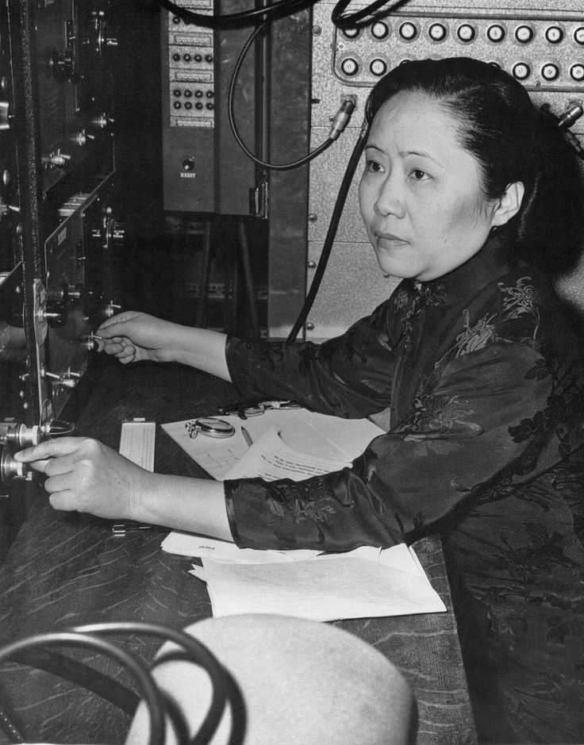

17 discoveries. 17 women whose names got left off. Pull a file from the drawer.
Parity is an archive of credit that was taken, erased or handed to someone else. Open a file, check the evidence, put her name back.
| Cases | 17 |
|---|---|
| Closed | 0 |
| Rank | Rookie |
How a case works

A dedication
In honour of Chien-Shiung Wu (1912–1997)
In 1956, Chien-Shiung Wu designed and led the experiment that overturned the law of parity: the long-held belief that the laws of nature make no distinction between left and right. In 1957 the Nobel Prize in Physics was awarded to Tsung-Dao Lee and Chen-Ning Yang, the two theorists who had proposed the question. Wu, whose experiment provided the answer, was not included.
Parity also means equality: the state in which recognition is given to those who have earned it, without regard to gender. That is the principle this archive is built on.
We named this project Parity for both of these meanings, and in honour of the woman remembered as the First Lady of Physics.
Archive passport
One for every case you close.